스스로 하는 일상을 돕는 안심토탈케어
일상생활 동작과 인지·정서·신체 활동을 연결합니다. 어르신의 자립 유지와 보호자의 돌봄 부담 경감을 목표로 지원합니다.
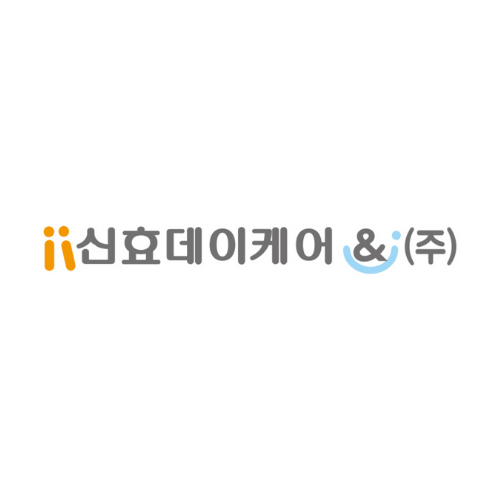
신효데이케어센터
소중한 가족의 낮 시간을 고민하고 계신가요?
센터의 공간과 이용 절차를 살펴보고, 어르신에게 필요한 돌봄을 함께 상담해 보세요.
이용 가능 여부와 제공 서비스는 개별 상담에서 확인해 주세요.
어르신의 삶을 지키는 돌봄
01 / 센터 소개
시설 상세 내용은 공식 블로그의 소개 글과 방문 상담에서 확인하세요.
센터 제공 홍보 이미지입니다. 내부 공간 사진은 아래 2022년 블로그 자료를 함께 참고해 주세요.
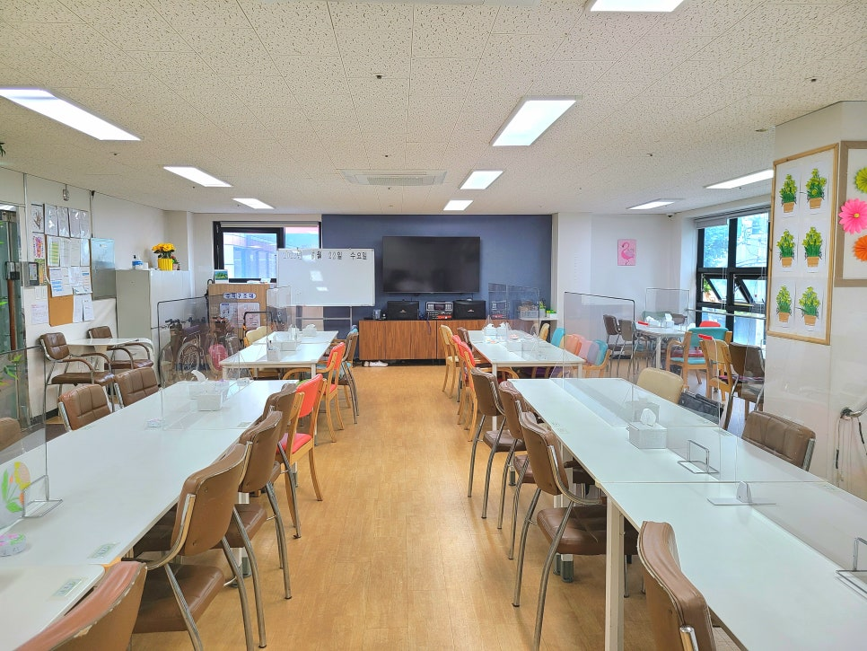
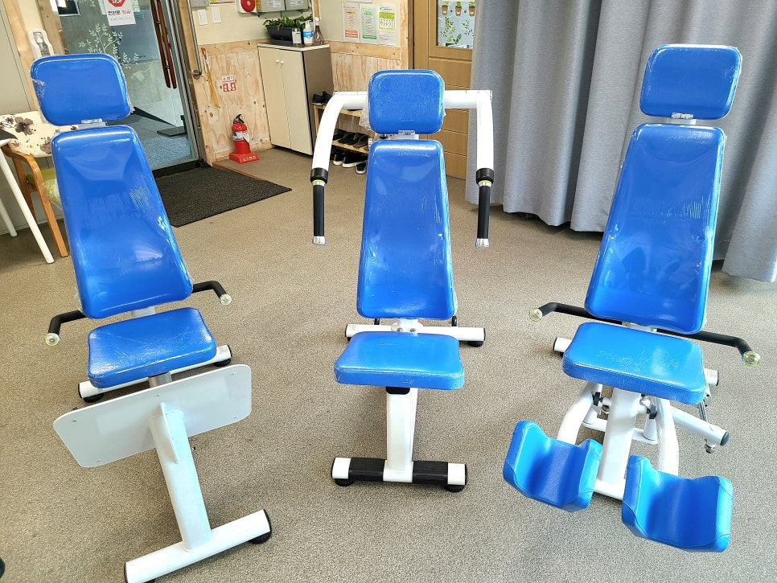
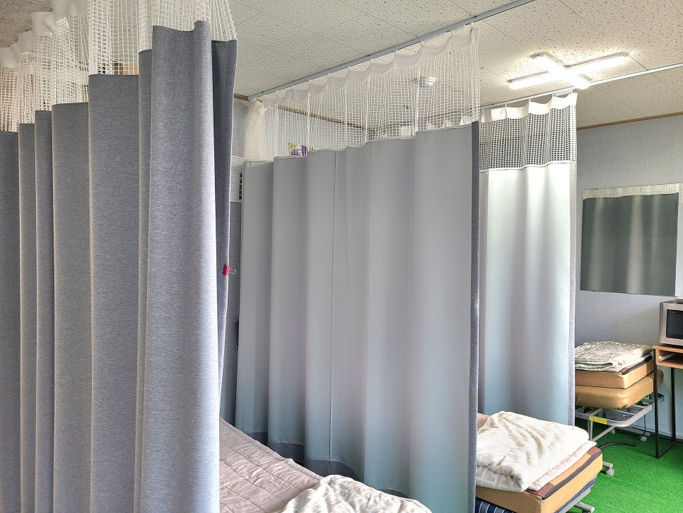
2017년 설립된 신효데이케어센터는 어르신을 삶의 주체로 존중합니다. 익숙한 가정과 지역사회에서 일상을 이어가실 수 있도록, 신체·인지·정서·사회적 영역을 연결하는 안심토탈케어를 실천합니다.
신효의 약속
어르신의 오늘을 세심하게 살피고, 내일의 일상까지 함께 준비합니다.
일상생활 동작과 인지·정서·신체 활동을 연결합니다. 어르신의 자립 유지와 보호자의 돌봄 부담 경감을 목표로 지원합니다.
치매·파킨슨병 등으로 일상에 도움이 필요한 어르신을 돌봐온 현장 경험을 바탕으로, 개인의 상태와 변화를 세심하게 살핍니다.
장기근속 인력과 안정적인 근무환경을 통해 어르신의 생활 습관과 특성을 이해하고, 돌봄의 연속성을 지향합니다.
인지교실·작업활동·체육교실 등 다양한 활동을 운영합니다. 기능 유지와 삶의 질 향상을 목표로 프로그램을 지속적으로 개발합니다.
사회적기업으로서 지역의 돌봄 공백 해소에 기여하고자 합니다. 야외나들이와 맛집탐방 등으로 어르신의 사회적 교류를 이어갑니다.
02 / 이용안내
이용 대상과 일정, 비용은 어르신의 상황과 센터 운영 기준을 확인한 뒤 안내합니다.
희망 이용 요일과 돌봄이 필요한 상황을 정리해 문의해 주세요.
이용 대상, 관련 자격·서류, 이용 가능 일정을 확인합니다.
방문 가능 시간을 협의하고 시설과 제공 서비스를 살펴봅니다.
비용과 준비사항을 확인한 뒤 실제 이용 절차를 안내받습니다.
아래에서 센터가 제공한 2026년도 5등급 이용요금 안내를 확인하실 수 있습니다. 실제 비용은 장기요양등급, 이용시간·일수, 본인부담률 및 식사 이용에 따라 달라지므로 상담 시 확인해 주세요.
이용요금 안내 이미지 보기 ↓일반 본인부담률 15% 기준의 예시입니다. 다른 등급과 개인별 적용 금액은 센터에 문의해 주세요.
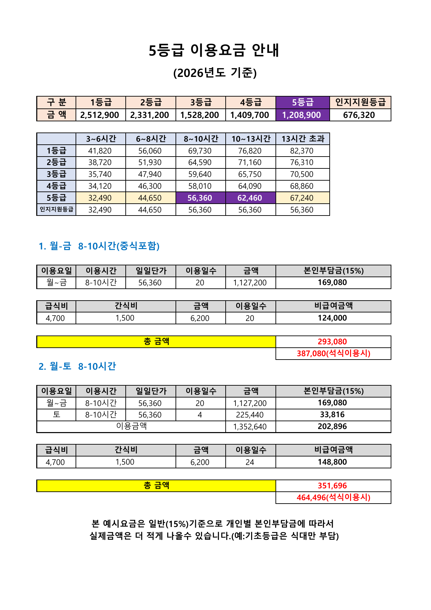
이미지를 누르면 크게 볼 수 있습니다. 센터 제공 자료 원문을 그대로 반영했습니다.
이용요금 PDF 원문 보기 ↗03 / 프로그램
인지·신체·정서·사회적 활동을 함께합니다.
센터에서 제공한 프로그램 이미지를 살펴보세요.
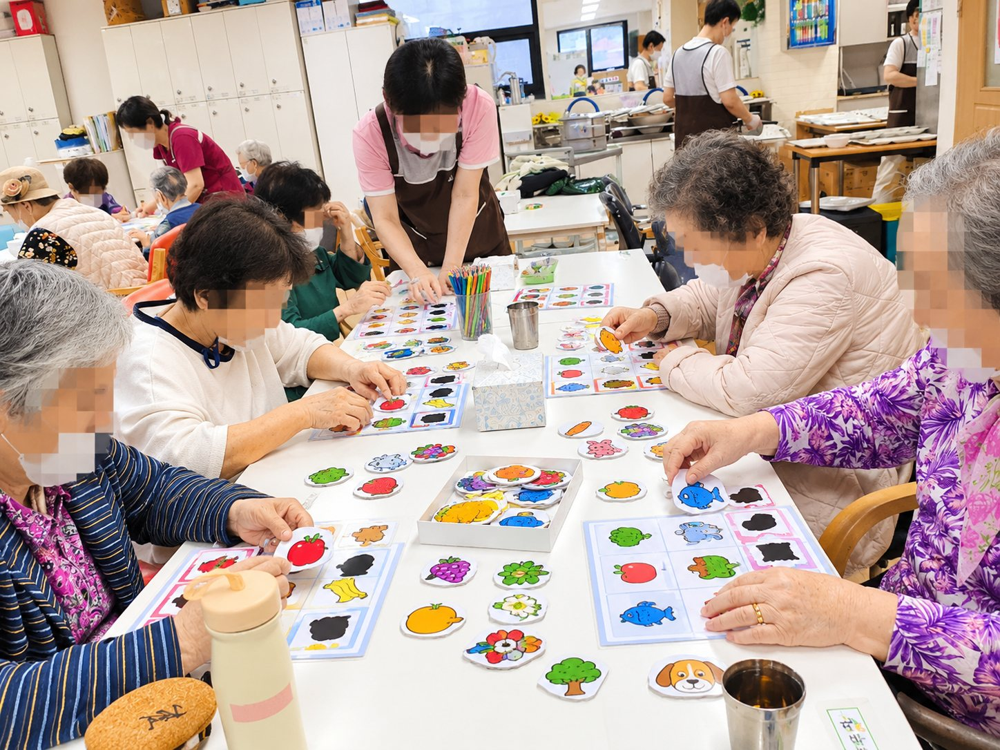
그림 맞추기와 놀이 등으로 참여하는 즐거움을 나눕니다.
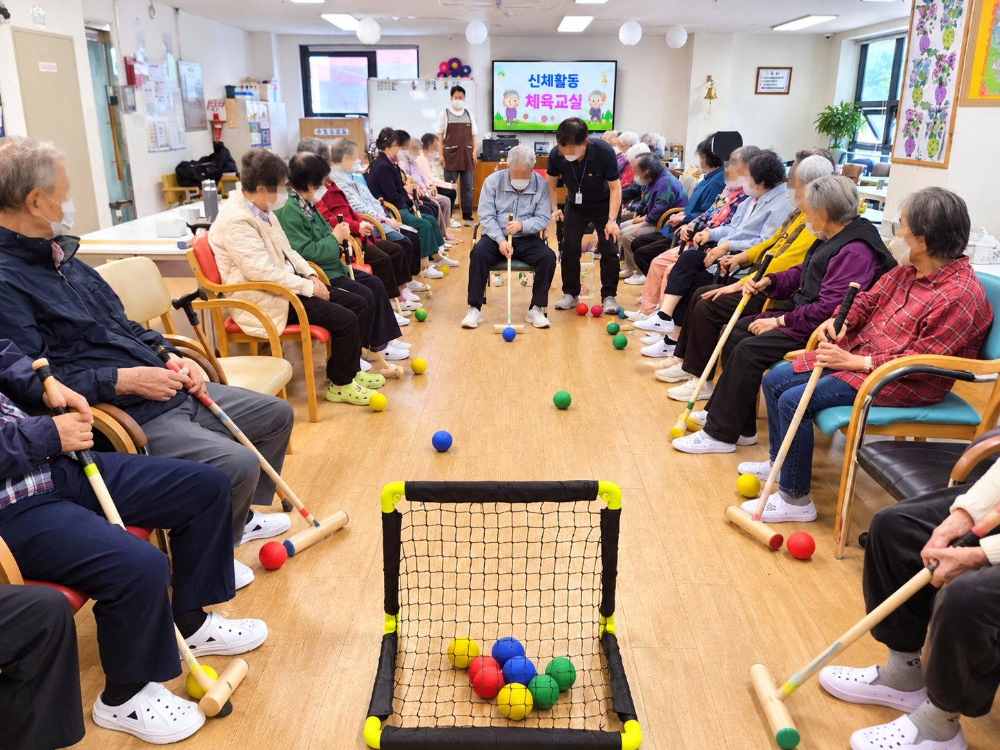
어르신의 상태에 맞춰 몸을 움직이고 함께 활동합니다.
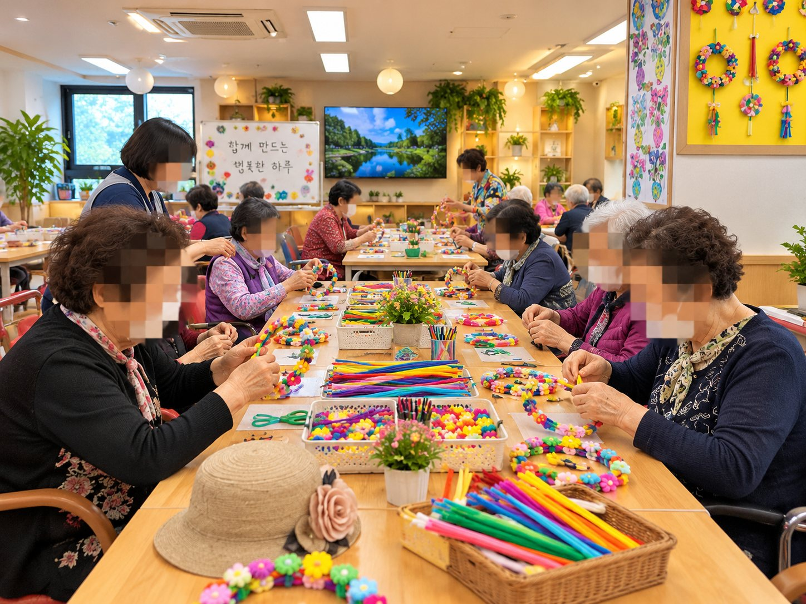
손으로 만들고 표현하며 일상에 성취감을 더합니다.
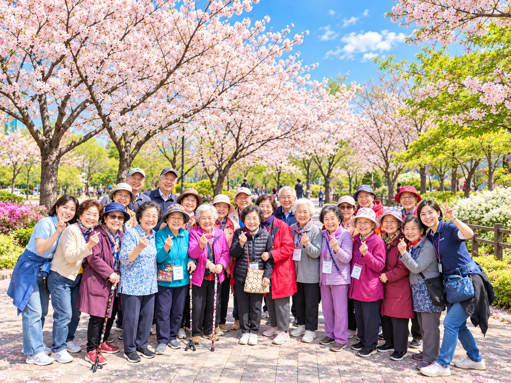
계절을 느끼며 센터 밖에서도 함께하는 시간을 갖습니다.
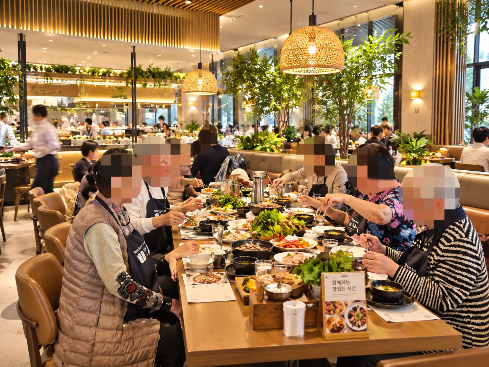
지역사회에서 식사와 만남을 나누는 활동입니다.
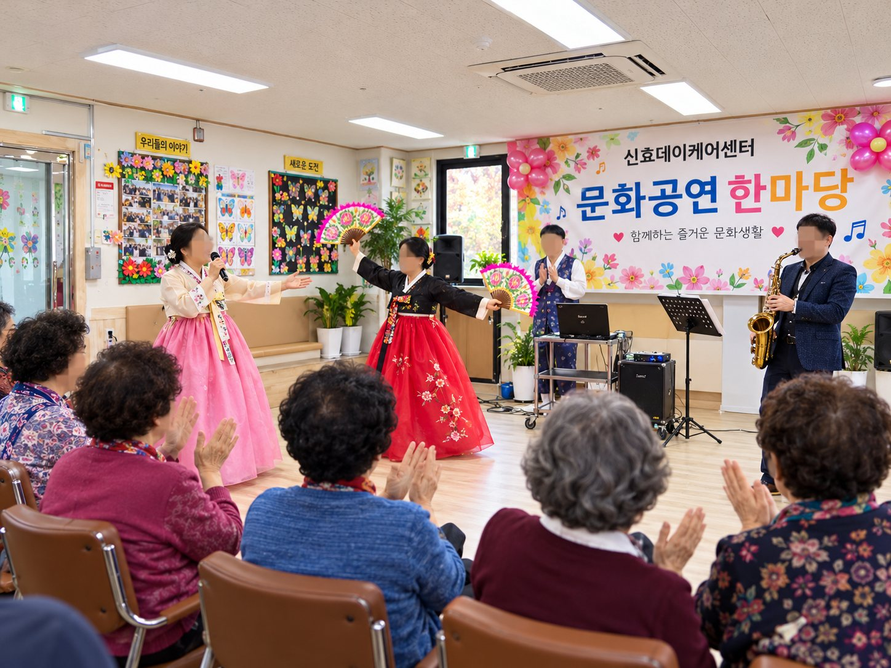
음악과 공연을 즐기며 정서적 교류를 나눕니다.
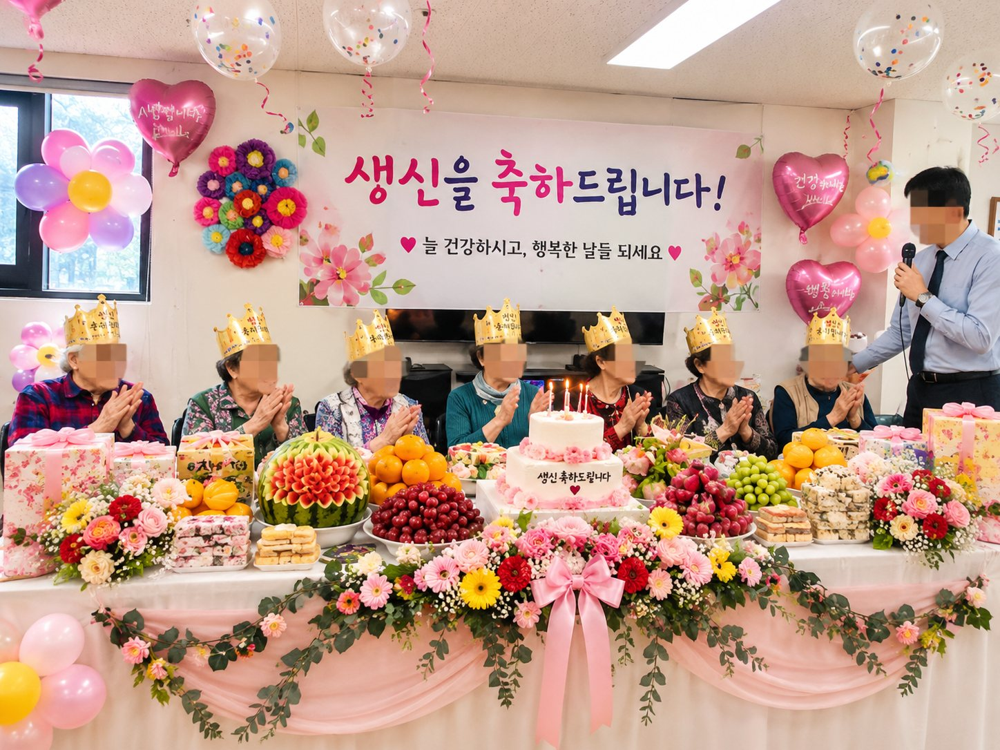
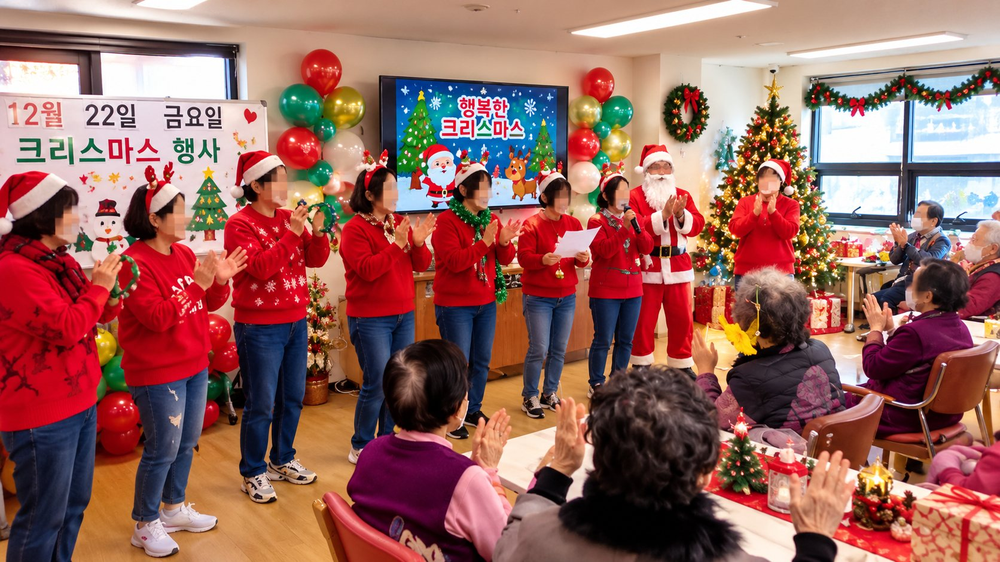
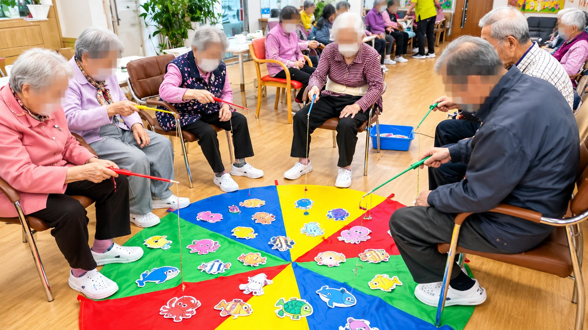
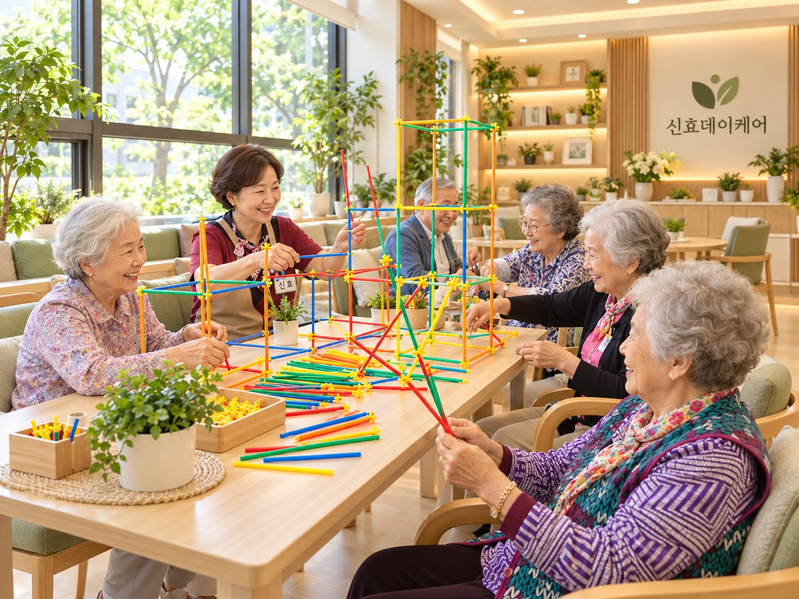
센터가 제공한 홍보 이미지입니다. 일부 이미지에는 연출·보정이 포함될 수 있습니다. 실제 활동 일정과 참여 가능 여부는 상담 시 확인해 주세요.
04 / 자주 묻는 질문
개별 상황에 따른 안내는
센터 상담을 통해 확인해 주세요.
가정에서 돌봄이 필요한 어르신과 보호자의 상담을 안내합니다. 장기요양등급과 건강 상태, 이용 가능 일정에 따라 실제 이용 가능 여부를 확인해 주세요.
등급이 없을 때의 실제 이용 조건과 신청 관련 안내 범위는 전화로 확인해 주세요.
송파구 전 지역 및 강남구·강동구·하남시 인근 지역에 차량 운행을 안내합니다. 실제 이용 가능한 노선·시간은 거주지에 따라 상담 시 확인해 주세요.
2026년도 5등급 이용요금 안내를 참고해 주세요. 일반 본인부담률 15% 기준의 예시이며, 실제 적용 금액은 등급·이용시간·일수·본인부담률과 식사 이용에 따라 달라집니다. 개인별 금액은 전화 상담으로 확인하실 수 있습니다.
센터 소개 글에서는 방문 전에 전화로 연락해 달라고 안내합니다. 02-486-4578로 오전 10시부터 14:30까지 상담을 진행하니 확인해 주세요. 공개 채널에 주민등록번호나 건강정보를 남기지 마세요.
05 / 오시는 길·상담
서울특별시 송파구 가락로 45, 3층
지도를 끌어서 주변을 살펴보고 +/−로 확대·축소할 수 있습니다. 건물 내 3층 위치와 출입구는 방문 전 확인해 주세요.
네이버 지도로 길찾기 ↗ 카카오맵 길찾기 ↗방문 전 상담 가능 시간을 확인해 주세요.